class: center, middle <br/><br/><br/><br/> .title[GPU programming] .subtitle[Introduction] <br/><br/> .author[Grzegorz Gruszczyński] .institution[MEiL PW, ICM UW] <br/> <!-- .coauthor[Sherlock S. Holmes<sup>1</sup>, John H. Watson<sup>2</sup>] .institution[<sup>1</sup>Baker Street Research, <sup>2</sup>Edinburgh University] --> <br/><br/> .date[October, 2023] <br/><br/><br/> .note[Created with [{Liminal}](https://github.com/jonathanlilly/liminal) using [{Remark.js}](http://remarkjs.com/) + [{Markdown}](https://github.com/adam-p/markdown-here/wiki/Markdown-Cheatsheet) + [{KaTeX}](https://katex.org)] --- name: toc class: left #Table of Contents 1. [Introduction](#WhyGPU) 1. [GPU memory model](#GPU_memory_model) 1. [GPU programming model](#GPU_programming_model) 1. [Sample code](#SampleCode) 1. [Porting issues](#porting_issues) 1. [Questions](#questions) <!-- Comment out the next slide if you don't want the Table of Contents link --> --- layout: true .toc[[✧](#toc)] <!-- This is a bare template. For more details and a demonstration of features, see [{index.html}](gpu_lecture1.html). --> --- name: Goals class: left # Goals - Become familiar with NVIDIA GPU architecture - Become familiar with NVIDIA GPU application development - Be able to write and run a simple NVIDIA GPU application in CUDA (`Compute Unified Device Architecture`). --- name: WhyGPU # Why GPU? Comparing GPU vs CPU is like comparing a Bus vs Car .left-column[ ```.sh ~5000 CUDA cores @ ~1 GHz ``` ] .right-column[ ```.sh ~10 CPU cores @ ~5 GHz ``` ] --- name: WhyGPU class: left # Why GPU? 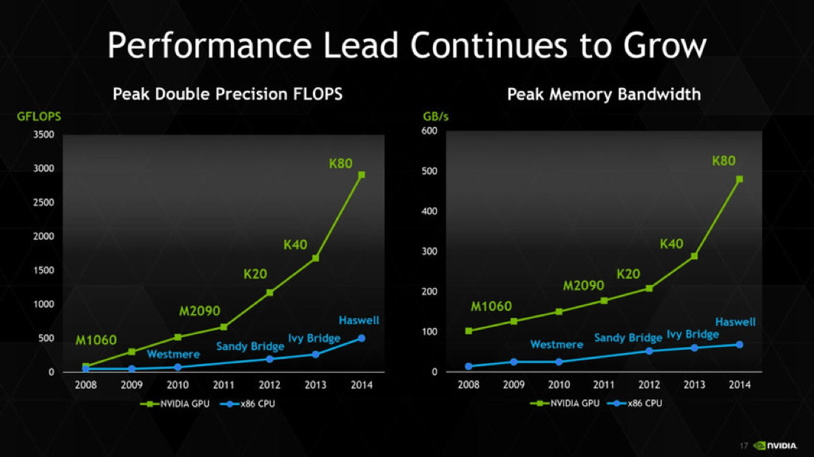 --- name: WhyGPU2 class: left # Why GPU? 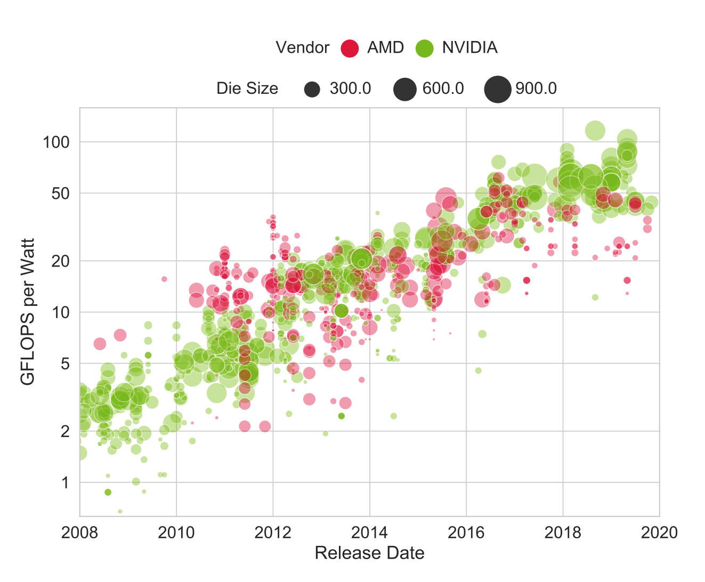 <https://arxiv.org/pdf/1911.11313.pdf></https:> --- name: WhyGPU3 class: left # Why GPU? 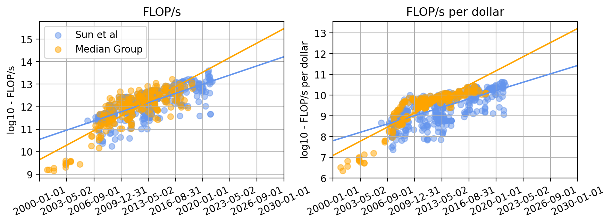 <https://arxiv.org/pdf/1911.11313.pdf> --- name: ThePrototype1 class: left # The GPU prototype <https://youtu.be/82-jh7nnNEo> --- name: ThePrototype2 class: left # The GPU prototype 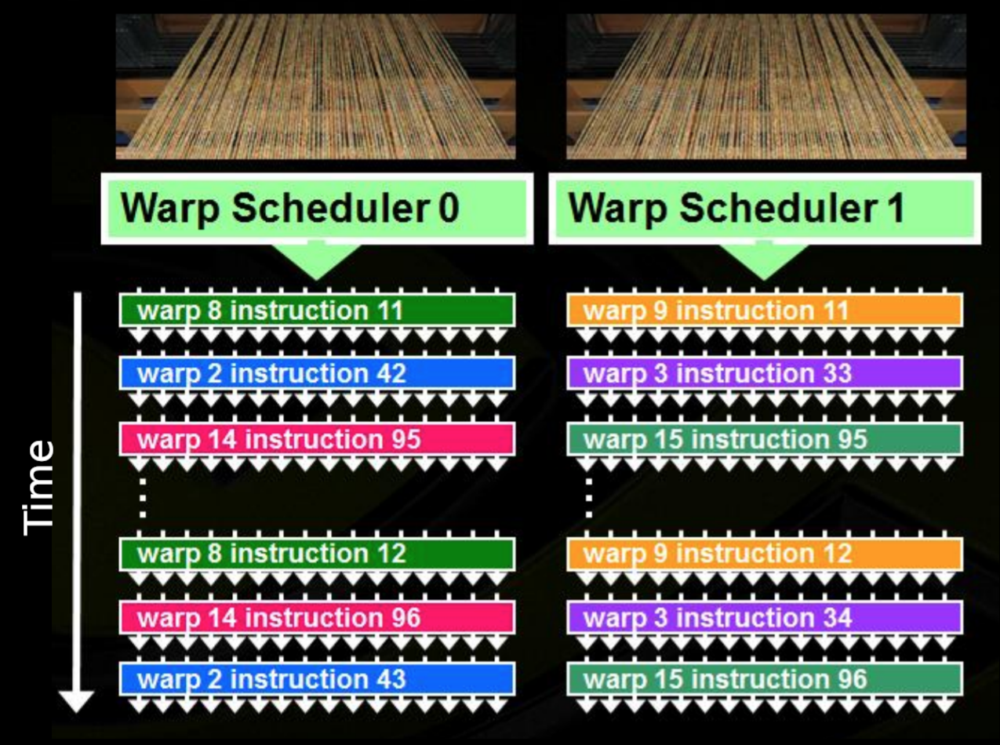 --- name: BranchingOnGPU class: left # Branching on GPU 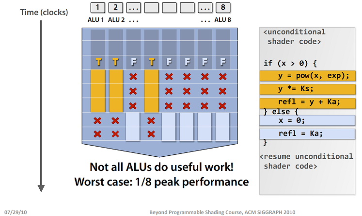 -- - all threads execute both conditional branches, so execution cost is the sum of both branches - no branch prediction --> branch predication --- name: ModernGPU class: left # Modern GPU 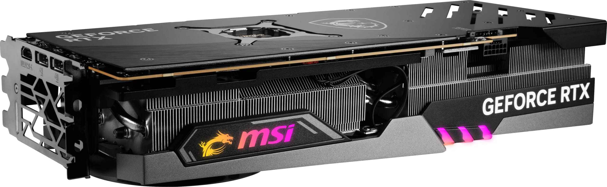 Which GPU do I need? How do they differ? * gaming * mobile (laptop) * server --- name: GPU_programming_model class: left # GPU programming model 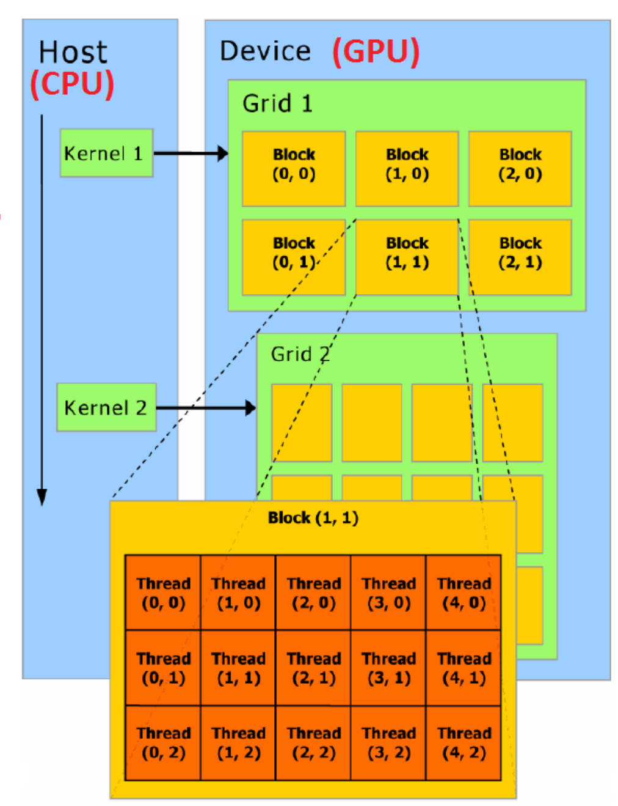 --- class: left # GPU programming model .left-column[ 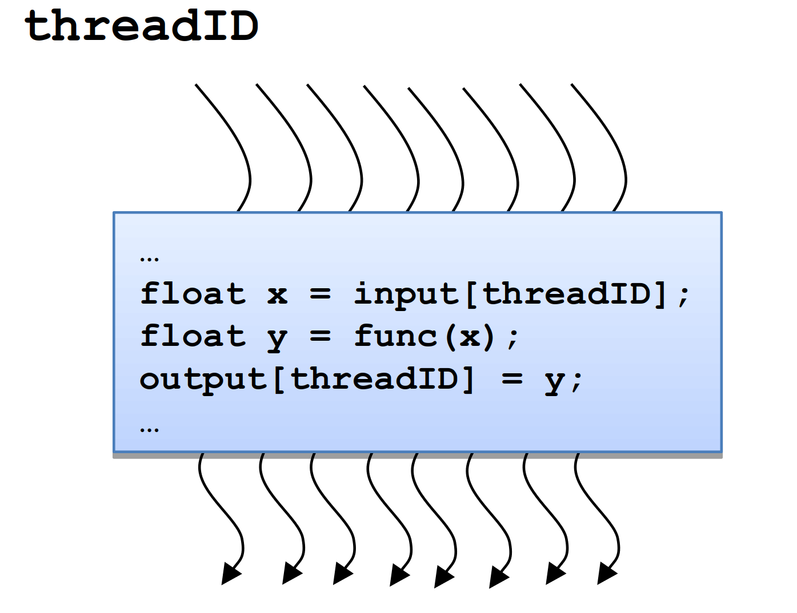 - A CUDA kernel is executed by an array of threads - All threads run the same code (SIMD) - Each thread has an ID which is used to compute memory addresses and make control decisions ] -- .right-column[ 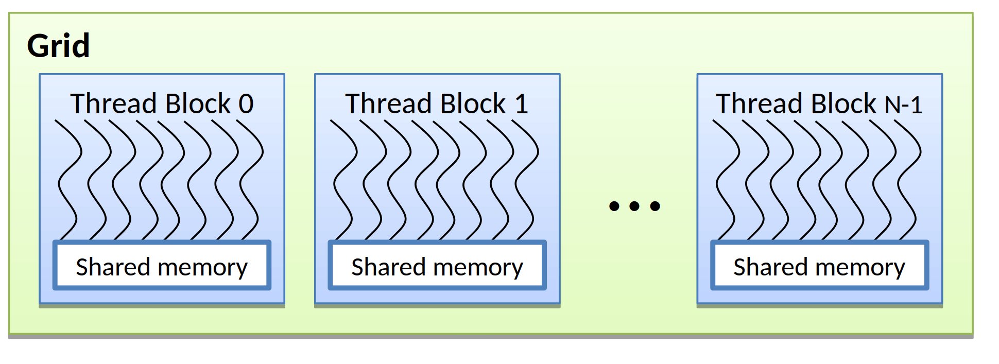 - Threads are arranged as a grid of thread blocks. - Threads within a block have access to a segment of shared memory. ] --- name: ModernGPU class: left # Thread ID 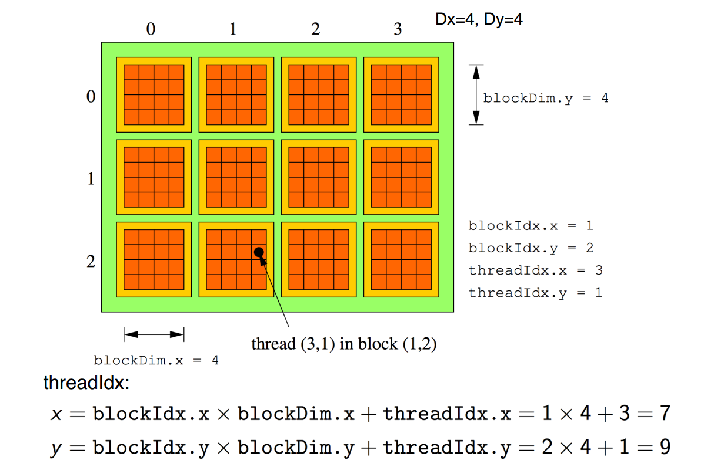 --- name: Warps class: left # Warps Within a block of threads, the threads are executes in groups of 32 called a warp -- - all threads in a warp do the same thing at the same time - if the block size is not divisible by 32, some of the threads in the last warp don't do anything - different warps are executed independently (except for explicit synchronisation) by run-time scheduler - if the block is 2D or 3D, the threads are ordered by first dimension, then second, then third - then split into warps of 32 --- name: WarpDivergence1 class: left # Warp divergence **Example 1: PDE application with boundary conditions.** GPU implementation: -- - if boundary conditions are cheap, loop over all nodes and branch as needed for boundary conditions - if boundary conditions are expensive, first kernel does interior points, second kernel does boundary points --- name: WarpDivergence2 class: left # Warp divergence **Example 2: Processing a long list of elements.** Depending on run-time values a few require expensive processing. GPU implementation: -- - first process list to build two sub-lists of “simple” and “expensive” elements - process two sub-lists separately --- class: left # Function Type Qualifiers ``` __global__ // launched by CPU on device (must return void) __device__ // called from other GPU functions (never CPU) __host__ // launched by CPU on CPU (can be used together with __device__) ``` <https://docs.nvidia.com/cuda/cuda-c-programming-guide/index.html#function-declaration-specifiers> --- class: left # Kernel launch Kernel launches are asynchronous - control returns to the CPU immediately. ```.c f_name<<<dim3 gridDim, dim3 blockDim, size_t sharedMem, cudaStream_t strId>>>(p1,... pN) ``` <!-- sharedMem - specifies the number of bytes in shared memory that is dynamically allocated per block for this call in addition to the statically allocated memory. strId - specifies the associated stream, is an optional parameter which defaults to 0. --> To block the CPU until all preceding CUDA calls have completed: ```.c cudaDeviceSynchronize() ``` To synchronize threads within a kernel: ```.c __syncthreads() ``` <https://docs.nvidia.com/cuda/cuda-c-programming-guide/#execution-configuration> --- name: GPU_memory_model class: left # GPU memory model <img style="height:60%; width:60%" src="./figures/CUDA-memory-model.gif"> --- name: GPU_memory_model2 class: left # GPU memory model <!-- https://www.redgregory.com/notion/2020/12/23/a-katex-table-cheatsheet-for-notion --> <style> table, th, td { border: 1px solid black; border-collapse: collapse; font-size: medium; } tr:nth-child(even) { background-color: rgba(128, 128, 128, 0.25); } th{ background-color: rgba(128, 128, 128, 0.4); } tr:hover {background-color: rgb(146, 43, 33 , 0.4);} </style> 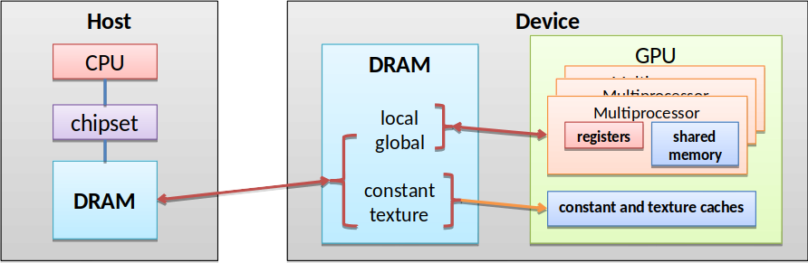 <table> <thead> <tr> <th>Variable declaration</th> <th align="left">Memory</th> <th align="left">Scope</th> <th align="left">Lifetime</th> <th align="left">Performance penalty</th> </tr> </thead> <tbody> <tr> <td><code>int localVar;</code></td> <td align="left">register</td> <td align="left">thread</td> <td align="left">thread</td> <td align="left">~ 1x</td> </tr> <tr> <td><code>__local__ int localVar;</code></td> <td align="left">register</td> <td align="left">thread</td> <td align="left">thread</td> <td align="left">~ 1x</td> </tr> <tr> <td><code>int localArray[10];</code></td> <td align="left">local</td> <td align="left">thread</td> <td align="left">thread</td> <td align="left">~ 100x</td> </tr> <tr> <td><code>__shared__ int sharedVar;</code></td> <td align="left">shared</td> <td align="left">block</td> <td align="left">block</td> <td align="left">~ 1x</td> </tr> <tr> <td><code>__shared__ int sharedVar[10];</code></td> <td align="left">shared</td> <td align="left">block</td> <td align="left">block</td> <td align="left">~ 1x</td> </tr> <tr> <td><code>__device__ int globalVar;</code></td> <td align="left">global</td> <td align="left">grid + host</td> <td align="left">application</td> <td align="left">~ 100x</td> </tr> <tr> <td><code>__constant__ int constantVar;</code></td> <td align="left">constant</td> <td align="left">grid + host</td> <td align="left">application</td> <td align="left">~ 1x</td> </tr> </tbody> </table> --- name: copying_memory class: left # Copying memory The memory between host and device can be copied in two ways. -- The synchronous call blocks the CPU until the copy is complete. Copy begins when all preceding CUDA calls are completed. ```.c cudaError_t cudaMemcpy( void* dst, const void *src, size_t count, cudaMemcpyKind kind) // enum cudaMemcpyKind // cudaMemcpyHostToDevice = 1 // cudaMemcpyDeviceToHost = 2 ``` -- An asynchronous call which does not block the CPU is ```.c cudaError_t cudaMemcpyAsync( void* dst, const void* src, size_t count, cudaMemcpyKind kind, cudaStream_t stream = 0) ``` -- <p style="font-size:smaller;"><strong>Note:</strong> A stream in CUDA is a sequence of operations that execute on the device in the order in which they are issued by the host code. While operations within a stream are guaranteed to execute in the prescribed order, operations in different streams can be interleaved and, when possible, they can even run concurrently. </p> --- name: Compiling GPU application class: left # Compiling GPU application Any source file containing CUDA language extensions must be compiled with the `nvcc` compiler. .left-column[ Compile & run GPU version ```.sh nvcc vecadd.cu -o vecadd_gpu ./vecadd_gpu ``` ] .right-column[ Compile & run CPU program ```.sh gcc vecadd.c -o vecadd_cpu ./vecadd_cpu ```] --- name: SampleCode class: left # Code sample Let us add two vectors 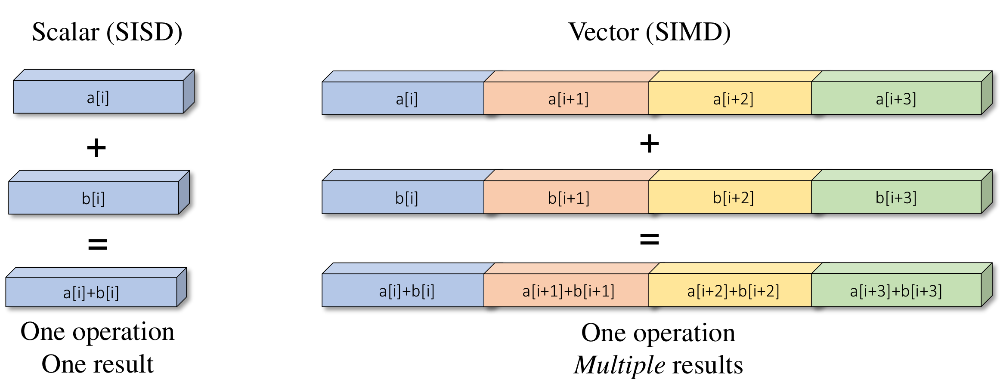 --- name: Code class: left # CPU-Only Version ```.c void vecAdd(int N, float* A, float* B, float* C) { for (int i = 0; i < N; i++) C[i] = A[i] + B[i]; } int main(int argc, char **argv) { int N = 16384; // default vector size float *A = (float*)malloc(N * sizeof(float)); // memory allocation float *B = (float*)malloc(N * sizeof(float)); float *C = (float*)malloc(N * sizeof(float)); vecAdd(N, A, B, C); // call compute kernel free(A); free(B); free(C); // memory de-allocation } ``` --- name: Code class: left # With GPU support ```.cu int main(int argc, char **argv) { int N = 16384; // default vector size float *A = (float*)malloc(N * sizeof(float)); // memory allocation float *B = (float*)malloc(N * sizeof(float)); float *C = (float*)malloc(N * sizeof(float)); float *devPtrA, *devPtrB, *devPtrC; cudaMalloc((void**)&devPtrA, N * sizeof(float)); // GPU memory allocation cudaMalloc((void**)&devPtrB, N * sizeof(float)); cudaMalloc((void**)&devPtrC, N * sizeof(float)); // copy data from the CPU (host) memory to the GPU (device) memory cudaMemcpy(devPtrA, A, N * sizeof(float), cudaMemcpyHostToDevice); cudaMemcpy(devPtrB, B, N * sizeof(float), cudaMemcpyHostToDevice); // call compute kernel <<<blocks, threads_per_block>>> vecAdd<<<N/512, 512>>>(devPtrA, devPtrB, devPtrC); // copy results from device memory to the host memory cudaMemcpy(C, devPtrC, N * sizeof(float), cudaMemcpyDeviceToHost); cudaFree(devPtrA); // gpu memory de-allocation cudaFree(devPtrB); cudaFree(devPtrC); free(A); free(B); free(C); // memory de-allocation } ``` --- name: Code class: left # GPU kernel CPU version ```.c void vecAdd(int N, float* A, float* B, float* C) { for (int i = 0; i < N; i++) C[i] = A[i] + B[i]; } ``` GPU version ```.cu __global__ void vecAdd(float* A, float* B, float* C) { int i = blockIdx.x * blockDim.x + threadIdx.x; C[i] = A[i] + B[i]; } ``` --- name: porting_issues class: left # Memory layout - porting issues Consider a set of points (x,y,z) describing some geometry... <!-- <img style="width:100%" src="./figures/cuda_indexing.png"> --> <img style="width:80%" src="./figures/Mesh-of-a-F1-car.jpg"> --- class: left # Memory layout - porting issues .left-column[ ```.cpp // SoA struct pointlist3D { float x[N]; float y[N]; float z[N]; }; struct pointlist3D points; ``` ] .right-column[ ```.cpp // AoS struct point3D { float x; float y; float z; }; struct point3D points[N]; ``` ] -- .left-column[ ```.py # Each MxM matrix # stores only x, y or z coordinates. import numpy as np a = np.arange(M*M*3, dtype=np.int8) a = a.reshape(3,M,M) a.strides # (M*M, M, 1) ``` ] .right-column[ ```.py # MxM matrix stores points(x,y,z) # in its most inner dimension import numpy as np a = np.arange(M*M*3, dtype=np.int8) a = a.reshape(M,M,3) a.strides # (3*M, 3, 1) ``` ] -- .left-column[ 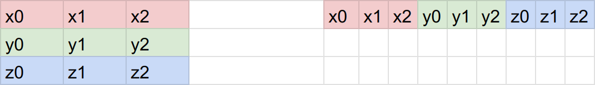 ] .right-column[ 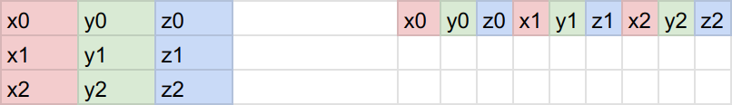 ] --- class: left # Command line utilities ``` nvidia-smi # NVIDIA System Management Interface program cuda-memcheck # checks for memory erros within the program cuda-gdb # Linux and mac (debugger) ``` --- class: left # Simple debugging Compile your application with debug flags `-g -G` ```.sh nvcc -g -G program.cu -o program ``` <https://docs.nvidia.com/cuda/cuda-gdb/index.html> Launch your application with debugger, for example `Nsight Visual Studio Code Edition` plugin for Visual Studio Code. --- name: DeviceQuery class: left # Device Query ``` Tesla V100-PCIE-32GB Release date: 27 March 2018 $10,664 for 16GB; $11,458* for 32GB 7 TFLOPS (FP64) <https://www.microway.com/hpc-tech-tips/nvidia-tesla-v100-price-analysis/> ``` ```.sh ./deviceQuery Starting... Device 0: CUDA Driver Version / Runtime Version 11.5 / 11.4 CUDA Capability Major/Minor version number: 7.0 Total amount of global memory: 32510 MBytes (34089730048 bytes) (080) Multiprocessors, (064) CUDA Cores/MP: 5120 CUDA Cores GPU Max Clock rate: 1380 MHz (1.38 GHz) Memory Clock rate: 877 Mhz Memory Bus Width: 4096-bit L2 Cache Size: 6291456 bytes Maximum Texture Dimension Size (x,y,z) 1D=(131072), 2D=(131072, 65536), 3D=(16384, 16384, 16384) Maximum Layered 1D Texture Size, (num) layers 1D=(32768), 2048 layers Maximum Layered 2D Texture Size, (num) layers 2D=(32768, 32768), 2048 layers Total amount of constant memory: 65536 bytes Total amount of shared memory per block: 49152 bytes Total shared memory per multiprocessor: 98304 bytes Total number of registers available per block: 65536 Warp size: 32 Maximum number of threads per multiprocessor: 2048 Maximum number of threads per block: 1024 Max dimension size of a thread block (x,y,z): (1024, 1024, 64) ``` --- name: DeviceQuery class: left # Device Query ```.sh Max dimension size of a grid size (x,y,z): (2147483647, 65535, 65535) Maximum memory pitch: 2147483647 bytes Texture alignment: 512 bytes Concurrent copy and kernel execution: Yes with 7 copy engine(s) Run time limit on kernels: No Integrated GPU sharing Host Memory: No Support host page-locked memory mapping: Yes Alignment requirement for Surfaces: Yes Device has ECC support: Enabled <-- Error correction code memory (ECC memory) Device supports Unified Addressing (UVA): Yes Device supports Managed Memory: Yes Device supports Compute Preemption: Yes Supports Cooperative Kernel Launch: Yes Supports MultiDevice Co-op Kernel Launch: Yes ``` --- name: questions class: left # Questions --- class: middle, center # That's All! For other cool stuff, check out: <https://developer.nvidia.com/blog/even-easier-introduction-cuda/> <https://github.com/openhackathons-org/gpubootcamp> <https://www.nvidia.com/en-us/training/online/> <https://kdm.icm.edu.pl/Tutorials/GPU-intro/introduction.en/> Have fun!